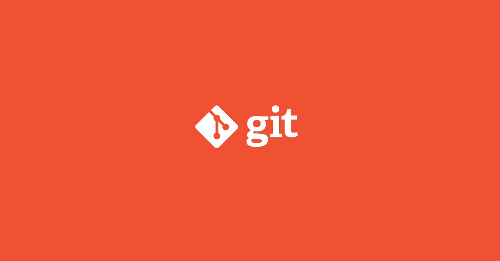

Required Tools
Equip yourself with the essential tools required for efficient coding, data analysis, and collaboration in Open Science.

TOPSTSCHOOL Development Team
Open Science Contributor
In the world of Open Science, collaboration and innovation go hand-in-hand. Scientists, researchers, and contributors from across the globe come together to share data, insights, and breakthroughs. However, this collaboration requires more than just ideas — it requires the right set of tools. These tools serve as the backbone for everything from coding and data analysis to version control and publishing. Without them, the journey from concept to contribution would be slow, error-prone, and often overwhelming. In this context, tools refer to a collection of software programs, platforms, and environments that allow you to efficiently work with code, manage versions, handle data, and even collaborate in real time. Each tool plays a specific role in the research and development process, addressing different challenges:
Version Control System like Git and SVN allow you to track changes in code, ensuring you never lose work and can collaborate seamlessly with others.
Integrated Development Environment (IDE) like Visual Studio Code provide a space to write, debug, and test code with features that make your workflow faster and more intuitive.
Data processing tools like Jupyter Notebook facilitate interactive data analysis, letting you run code in chunks, visualize outputs, and document results in one place.
Package managers like Conda help you manage software libraries and environments, ensuring that you’re working with the right versions of the tools for your project.
These tools are more than just software — they are the enablers of Open Science. They streamline workflows, reduce friction, and help build a shared language across diverse disciplines. By mastering these tools, you become empowered to focus more on your research and less on the technical overhead. They allow you to engage in the spirit of Open Science — transparently, collaboratively, and efficiently.
Git
Git is a powerful, distributed version control system that enables you to track changes in your code and data over time. Git is not just a tool but an essential framework that supports open science through efficient, organized collaboration on data, code, and research. Like mentioned earlier, Git is a distributed version control system, meaning it allows multiple contributors to work on a project simultaneously and independently, while maintaining an organized record of changes.

Understanding Git
Collaborating on Code for Data Analysis. Imagine a team of researchers working on a data analysis project. Each researcher can create their own branch to experiment with different data cleaning methods, machine learning models, or visualizations. They can commit their changes, track progress, and merge successful ideas into the main branch. This structure encourages collaborative testing while ensuring stability.
Version Control for Data and Documentation. Git can be used to version not only code but also datasets, notebooks, and documentation. If researchers make updates to data preprocessing methods, for example, they can use Git to track those changes and ensure that documentation remains aligned with the current state of the data.
Publishing Open Access Research. By pushing project repositories to platforms like GitHub or GitLab, researchers can easily share their work with the global community. GitHub repositories can even be linked to Zenodo, allowing for citable versions of the project, complete with DOI generation. This setup is ideal for open science, where making research outputs available and citable is critical.
Three core concepts
Repositories. A repository (repo) is essentially a project folder where Git tracks changes. Repositories can be local (on your machine) or remote (hosted on platforms like GitHub or GitLab). Open Science projects often have both local and remote repositories.
Branches. A branch is an independent line of development within a repository. By default, Git creates a main branch, but contributors can create additional branches to work on new features or experiments without disturbing the main codebase. Branches are essential in open science projects as they allow for experimentation and modularity. For example, researchers can create a branch to test a new data analysis method, and only merge it into the main branch if the method proves effective.
Commits. A commit is a snapshot of changes in the project. Each commit records — what changes were made, who made the changes, when they were made and a message describing why the changes were made. Commit messages should be clear and descriptive, as they serve as a record for others who may need to reproduce or build upon your work.
Installing Git
Go to git-scm.com and download the latest version for your operating system.
Run the installer.
Double-click the downloaded
.exefile and follow the on-screen instructions. Accept the default settings unless you have a specific reason to modify them..Open the
.dmgfile, drag the Git application into yourApplicationsfolder, and follow any remaining instructions.Open your terminal and use the following command based on your Linux distribution.
sudo apt update && sudo apt install git
sudo dnf install git
sudo pacman -S git
Verify the installation by opening a terminal or command prompt and type the following command:
git --version
With Git installed, you’ll be able to synchronize your local work with a remote repository on GitHub (or another Git-based platform) and start collaborating on open science projects.